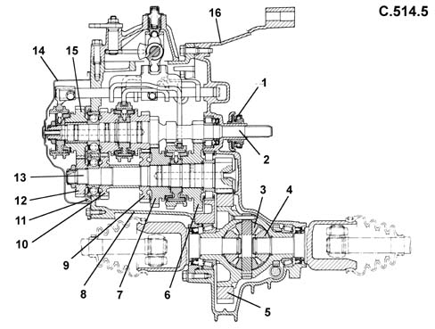

Introduction - MANUAL GEARBOX AND DIFFERENTIAL
- Path
- Descriptions > 21 GEARBOX > 2110 MANUAL GEARBOX AND DIFFERENTIAL > Introduction - MANUAL GEARBOX AND DIFFERENTIAL
- Kind
- system description
- Applies to
- engines: 1.2 8v, 1.2 16v, 1.4 16v; all production periods
- Interactive page
- https://sloeber94.github.io/elrnDB-lYpsln/en/#/2429844
Applies to: engines: 1.2 8v, 1.2 16v, 1.4 16v; all production periods
The structure of the C514 gearbox used on petrol versions consists of:
a gearbox casing which contains and supports the main and layshafts, rods and gear selector forks and the gear selector and engagement device.
- a rear cover which contains the 5th speed gears and the rear bearing retaining plate for the main and layshafts
a bell housing which contains the clutch, the thrust bearing and the control linkage. This housing is modified to support the selector unit on versions with a Selespeed electrohydraulic actuator.
Applies to: engines: 1.2 8v, 1.2 16v, 1.4 16v; all production periods
Main shaft
The main shaft consists of:
1st, 2nd speed and Reverse gears fitted directly on the shaft
3rd, 4th and 5th speed gears fitted on the shaft.
The main shaft is supporte by a front roller bearing and a rear ball bearing.
Applies to: engines: 1.2 8v, 1.2 16v, 1.4 16v; all production periods
Layshaft
The layshaft consists of 1st, 2nd, 3rd, 4th and 5th speed gears fitted on the shaft.
The layshaft is supported on:
a front conical roller bearing
a rear ball bearing
Applies to: engines: 1.2 8v, 1.2 16v, 1.4 16v; all production periods
Gears
The gears are the following type:
helical toothed for the forward speeds
straight toothed for reverse.
Applies to: engines: 1.2 8v, 1.2 16v, 1.4 16v; all production periods
Synchronizers
The synchronizers for the forward speeds are the Borg-Warner type.
The arrangement for the synchronizers is the split type because the synchronizers for the 1st and 2nd speeds are fitted on the layshaft, whilst those for the 3rd, 4th and 5th speeds are on the main shaft.
This solution reduces gearbox noise in neutral from the moment 3 of the 5 pairs of gears are not driven.
In addition, the engagement and synchronization loads are reduced as a result of the corresponding reduction in the inert masses rotating downstream of the crankshaft.
Applies to: engines: 1.2 8v, 1.2 16v, 1.4 16v; all production periods
Differential
On the C.514 gearbox the differential unit is located at the rear of the gearbox casing.
It consists of:
a crown wheel and pinion reduction
a differential housing constructed in a single piece which includes the planet and satellite gears.
The differential is supported by two conical roller bearings.
The planet gears have a splined profile with which the two couplings connected to the two driveshafts which transmit the powr to the wheels.
The drive gear for the speedometer is fitted on the outside of the differential housing.

1, Thrust bearing 2, Main shaft 3, Satellite gears 4, Planet gears 5, Ring gear 6, 1st speed driven gear. 7, 2nd speed driven gear. 8, Gearbox casing 9, 3rd speed driven gear 10, 4th speed driven gear 11, Rear bearing retaining plate 12, 5th speed driven gear. 13, Layshaft 14, Rear cover 5th speed drive gear 16, Bell housing